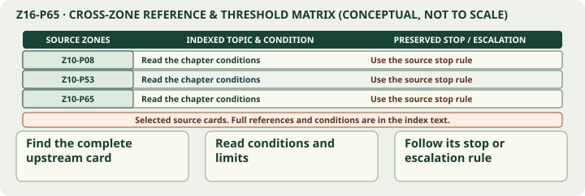

Z16-P65 · Field reference atlas · New manuscript
Clinical, Toxicological and Public-Health Acronyms Reference
Locate the original encyclopedia cards for clinical, Toxicological and Public-Health Acronyms Reference.
When it applies · Offline reference lookup. The linked chapter defines the situation, audience and limits.
Equipment · Offline reader or the complete linked source cards in print.

Actions
- Open Z10-P08 for activate 911, AED, and dispatcher-guided CPR for cardiac arrest; Z10-P53 for execute assisted descent and rescue for life-threatening HAPE and HACE.[A10, M03, X09]
- Open Z10-P65 for manage dehydration, diarrhea, and vomiting with small-sip oral rehydration; Z05-P135 for poison Exposure Recognition and Emergency Referral (1-800-222-1222 / 911).[A10, M17, B09]
- Read the linked card’s applicability, equipment and stop conditions together. Keep review and source limitations attached to any excerpt.[A10, ED]
Failure recognition · Acting on a keyword or title while overlooking an upstream exception or stop condition.[A10, ED]
Verify · Confirm the exact page ID and read the full conditions before using the reference.[A10, ED]
Stop or change course · If the situation falls outside a linked card’s conditions or its stop rule applies, stop using this index as a decision aid. Follow the full card and current local directions.[A10, ED]
Evidence and editorial notes
- A10 · FEMA / Ready.gov · Make a Plan (current web edition)
- Section: Offline reader navigation, historical lineage, and HOLD transparency · Conditions: Using the complete 16-zone offline archive, zone readers, and print proofs
Support: Navigation aids expose draft status, reconstruction lineage, open diagnostic photo needs, and pending specialist holds on every lookup path.
Limitations: This index entry does not independently establish any safety, regulatory or diagnostic instruction. · Conflicting evidence: None noted.
Editorial note: Index design and cross-reference policy. Substantive directions come from linked upstream chapter claims. · Specialist reviewer: Accessibility, print QA, and editorial reviewer
Primary source · checked 2026-11-24 - B09 · National Capital Poison Center · First Aid for Poisonings (Current web edition)
- Section: When to call 911; get help from poison experts · Conditions: Suspected poisoning in the United States
Support: Call 911 for collapse, seizure, trouble breathing or inability to wake. Otherwise promptly call Poison Help at 1-800-222-1222.
Limitations: Use route- and substance-specific advice. Do not wait for symptoms or collect unknown material if doing so risks exposure or delays care. · Conflicting evidence: Conditions are recorded in the A03 audit.
Editorial note: Mandatory Z05 poison-response escalation. · Specialist reviewer: Clinical toxicologist / Poison Center
Primary source · checked 2026-11-25 - M03 · American Heart Association · 2025 Adult Basic Life Support (2025)
- Section: Figure 2 Adult Basic Life Support Algorithm for Lay Rescuers; 6.1 Recognition of Cardiac Arrest · Conditions: Unresponsive adult with absent or abnormal breathing; early dispatch and AED access
Support: Recognize gasps as abnormal, activate EMS, start CPR and use an AED promptly. Follow prompts and resume after analysis or shock.
Limitations: Pediatric and drowning arrest require their own training or dispatch prompts; the adult cardiac-arrest algorithm is not all-age guidance. · Conflicting evidence: See A02 claim audit for boundaries.
Editorial note: Distinguishes lay activation and dispatcher-guided CPR from advanced life support. · Specialist reviewer: EMS and resuscitation specialist
Primary source · checked 2026-11-25 - M17 · NIH / MedlinePlus · Dehydration (current web edition)
- Section: Dehydration Recognition, Oral Rehydration, and Red Flags · Conditions: Heat exertion, prolonged diarrhea, vomiting, or inadequate water intake
Support: Encourage small frequent sips of safe potable water or labeled oral rehydration solution in alert patients able to swallow; evacuate urgently for confusion, inability to keep fluids down, sunken eyes, or minimal dark urine.
Limitations: Severely dehydrated or altered patients cannot safely rehydrate by mouth alone. · Conflicting evidence: None; avoids unverified homemade salt-sugar ratio guesswork when labeled packets exist.
Editorial note: Links hydration monitoring to medical evacuation triggers. · Specialist reviewer: Wilderness medicine and internal medicine
Primary source · checked 2026-11-24 - X09 · CDC · Travel to High Altitudes (current web edition)
- Section: Travel to High Altitudes > Acclimatization, AMS, HAPE and HACE · Conditions: Mountain travel above ~8,000 feet (2,500 meters)
Support: Ascend gradually to acclimatize; recognize Acute Mountain Sickness (headache, nausea, fatigue) and life-threatening HAPE (shortness of breath at rest, cough) or HACE (ataxia, confusion), for which immediate descent and medical care are essential.
Limitations: Physical fitness does not prevent altitude illness; individual susceptibility varies unpredictably. · Conflicting evidence: None; aligns with NPS-MTN.
Editorial note: Core physiological evidence for Z12 mountain-altitude cards. · Specialist reviewer: Mountain medicine and high-altitude safety
Primary source · checked 2026-11-24
Source lineage · New manuscript (Z16 P20 glossary) · Classification · New manuscript.